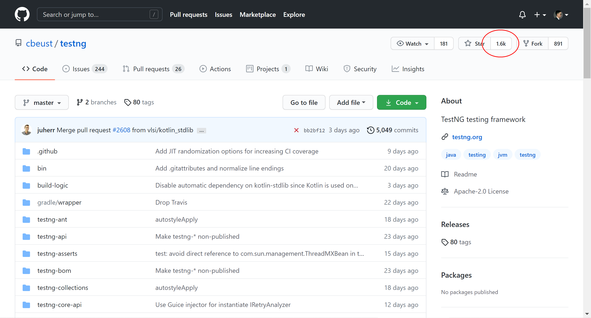

为什么学 JUnit5
Java 技术栈的单元测试框架有两个：JUnit 和 TestNG，有种说法是 TestNG 比 JUnit 更强大，学 TestNG 就够了，但是当我打开 GitHub 看到 star 的时候，犹豫了：
JUnit

TestNG

相差了足足有3K之多。带着这个困惑，我在网上查阅了一番资料，原来JUnit5 相较于 JUnit4 有了重大升级，已经包含了 TestNG 的所有功能。为了坚定我学 JUnit 的想法，我咨询了身边做 Java 开发的朋友，开发写 UT 都是用的 JUnit。这两个理由足以让我开始对 JUnit5 的学习。
JUnit5 是什么
跟之前的 JUnit 有所不同，JUnit5 由三个子项目的模块组成：
JUnit5 = JUnit Platform + JUnit Jupiter + JUnit Vintage
- JUnit Platform 在 JVM 上启动测试框架的基础，不仅支持 Junit 自制的测试引擎，其他测试引擎也都可以接入。提供了从命令行启动平台的 Console Launcher，和支持 JUnit4 环境的 JUnit4 based Runner。IDE 一般都集成了 JUnit Platform，比如 IntelliJ IDEA。
- JUnit Jupiter JUnit5 新特性，结合了新的 programming model 和 extension model，以便于在 JUnit5 中编写测试和扩展。提供了在平台上运行基于 Jupiter 测试的 TestEngine。
- JUnit Vintage 提供了在平台上运行基于 JUnit3 和 JUnit4 测试的 TestEngine，照顾老的项目。
JUnit5 新特性
使用 JUnit Jupiter 写测试
示例代码：
import static org.junit.jupiter.api.Assertions.assertEquals;
import example.util.Calculator;
import org.junit.jupiter.api.Test;
class MyFirstJUnitJupiterTests {
private final Calculator calculator = new Calculator();
@Test
void addition() {
assertEquals(2, calculator.add(1, 1));
}
}
注意这个导包的路径org.junit.jupiter.api，Jupiter 就是 JUnit5 的新特性。
兼容 JUnit4 和 JUnit3
JUnit Vintage 提供了在平台上运行基于 JUnit3 和 JUnit4 测试的 TestEngine， 并且新的包org.junit.jupiter避免了和 JUnit4 的org.junit在 classpath 上有任何冲突。
多 IDE 运行
JUnit 能在 IntelliJ IDEA、Eclipse、NetBeans、Visual Studio Code 等 IDE 中运行。
从 JUnit Jupiter 扩展 Model
示例：
@ExtendWith(RandomParametersExtension.class)
@Test
void test(@Random int i) {
// ...
}
给 test 方法注册了一个新的 RandomParametersExtension。
更多高级用法
JUnit5 提供了更多高级用法，比如 JUnit Platform Launcher API 和 JUnit Platform Test Kit 等，这些会在之后的文章逐一进行介绍。
小结
本文首先解释了为什么要学 JUnit5，一是因为全新一代 JUnit 功能更加强大，二是 Java 开发写单元测试都是用的 JUnit，然后介绍了 JUnit5 是什么以及它的新特性。学习 JUnit，在单元测试这条路上，又往前迈了一步。
参考资料：
https://junit.org/junit5/docs/current/user-guide/
https://blog.csdn.net/weixin_45876795/article/details/111059031